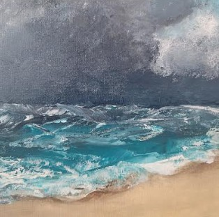

La couleur
comme langage.
Peinture et arts plastiques. Un univers de matières, de mouvements et de couleurs, entre paysages, abstraction et créations singulières.
Découvrir les créations ↗
ALIETTE · COULEURSLa galerie
Un aperçu de mes peintures, matières et couleurs.

Aliette JACQMARCQ
Installée à Nantes, je développe une pratique autour de la peinture et des arts plastiques. Mon travail explore la couleur, les textures et les contrastes, en passant de la représentation de paysages à des compositions plus libres.
Au fil des créations, les bleus, les mouvements de l’eau et les jeux de matière occupent une place importante. Mon univers s’exprime également à travers les collages et les réalisations en volume.
La couleur comme langage.
Prendre contact
Une question sur une création, une envie d’échanger autour de mon travail ou un projet à partager ? Vous pouvez m’écrire directement.
jacqmarcqaliette@gmail.com ↗